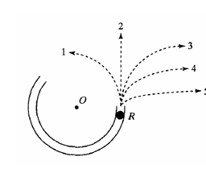

A simulação mostra um canal sem atrito em forma de um segmento de um círculo com seu centro em O.
O canal foi ancorado a uma mesa horizontal sem atrito.
Você está olhando para baixo na mesa.
As forças exercidas pelo ar são negligenciáveis.
Uma bola é disparada em alta velocidade para o canal em P e sai em R.Qual dos caminhos de 1 a 5 abaixo a bola seguiria mais de perto após sair do canal em R e se mover pela superfície da mesa sem atrito?
